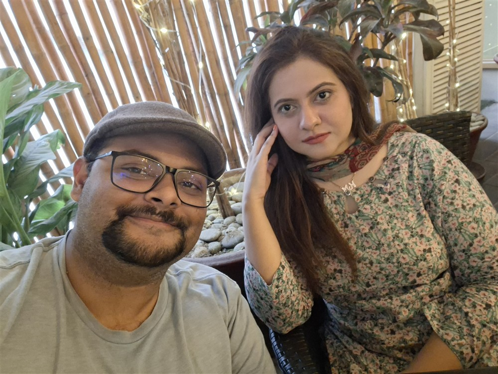
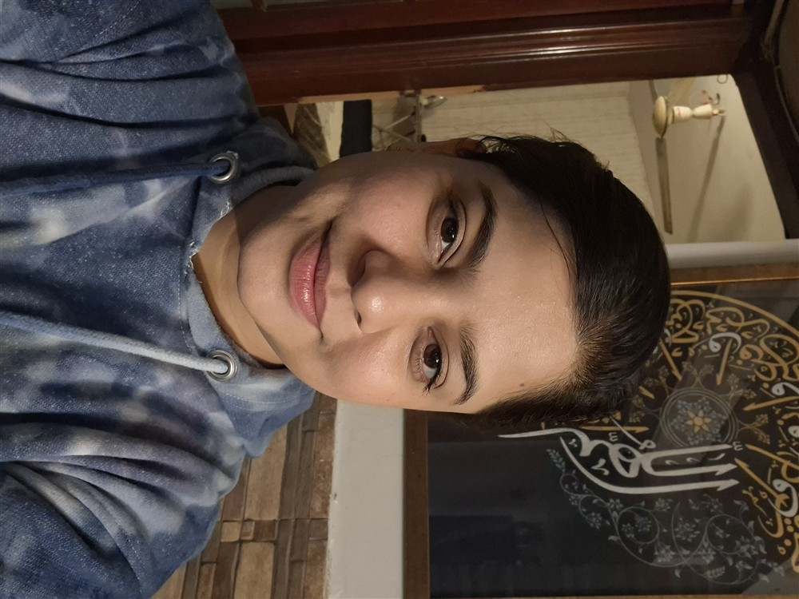
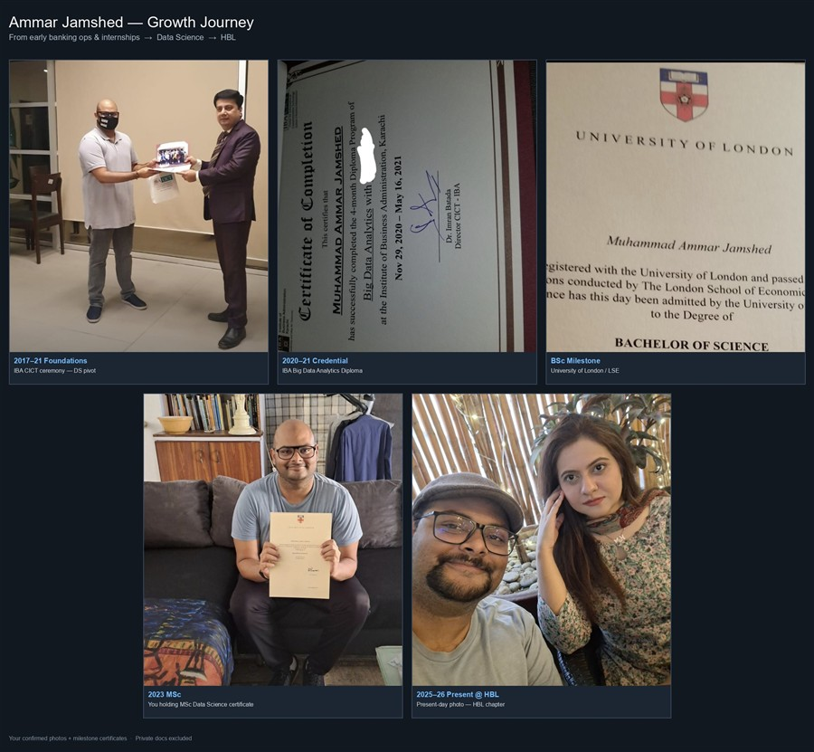
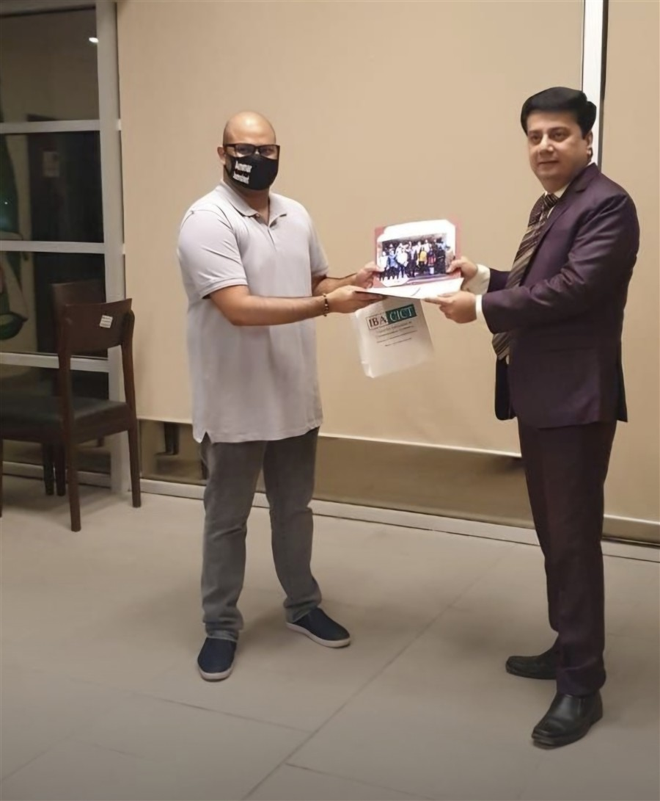

30 Under 30
Connected Pakistan 2025 — still the kid who started with Excel and curiosity.
Ammar Jamshed
HBL · Automation · Compliance Global mentor · Humble beginnings
Data scientist, mentor, and founder. I currently work at HBL in the Automation segment of Compliance — and I’m happiest when I’m helping someone one step behind me find their path.
Rooms I’ve learned in, taught in, and built with
Profile
A Karachi data scientist who still says yes to coffee — and no to taking on client builds right now.
I currently work at Habib Bank Limited (HBL) in the Automation segment of Compliance — building practical automation that helps teams move faster without losing discipline.
Before that path: founder of Coursemon, consultant & instructor at AI Datayard, Unilever HR analytics, The Citizens Foundation, and years of freelancing and mentoring — from neighbourhood classrooms to Times Square shout-outs and Kaggle’s top mentor ranks.
I’m not available for paid build projects. If you’re navigating a career pivot in data, AI, or banking tech, I’m glad to talk over coffee and share enablement advice.
Connected Pakistan 2025 — still the kid who started with Excel and curiosity.
LinkedIn licenses & certifications — IBM, Google, IMF, Coursera, Udemy, Educative, LUMS, and more.
Kaggle · Topmate Times Square · LinkedIn Top Voice (DS & BI).
Career runway
Manager / practitioner in AI & automation within HBL Compliance — dashboards, RPA, and digital enablement that keep regulated workflows moving.
PKR 1M+ revenue · SECP Pvt Ltd · NIC Karachi · NFT certificates · JUBI · GPT course recommender · Coursera / Udemy / Educative affiliates.
300+ professionals trained · ratings to 5.0 · IBP DS batches · Kaggle BIPOC Top 10 mentor · webinars with Nike, Microsoft, HSE.
HR analytics & Ekaterra migration · TCF analytics · freelance BI/ML for clients across continents — the grind that built the craft.
Stages & rooms
Moments from lectures, panels, and workshops — click a card to expand.




Hamdard University Islamabad · 200+ students
E-Mustakbil · IIU · 100+ audience
SEED Ventures · Islamic Chamber of Commerce
NED University · 100+ registrations
Corporate Pakistan & UK cohorts · 50+ / session
Institute of Bankers Pakistan · multi-bank batches
GIK University
IoBM · SDG4 conference · 1000+
FAST-NU · Moderator · 150 students
FAST · Guest speaker · 70+
Kaggle BIPOC · 200+ mentees globally
NICAT Islamabad
LinkedIn build log
Past work I’m proud of — filter by theme. Not accepting new builds; coffee chats welcome.
App for cow trading workflows and pricing intelligence.
Tokenized cultural icon coin named after Zubaida Apa.
Region’s first marketplace-linked GPT for courses across platforms.
Smart contract to mint uploaded certificates as NFTs.
Co-organised with Anryton at NIC Karachi · PKR 1M prize pool.
Trained Grade 19–20 civil servants in AI & analytics.
SQLite + Streamlit practice bench for trainees without local MySQL.
With Pakistan’s PAKSAT project lead, Dr Khurram.
Python library for high-volume 3D visualization on Matplotlib Axes3D.
Using analytics to improve teaching and learning practices.
Trained professionals from Meezan, BAH, UBL, NBP, SBP, GSK and more.
Taught US company & government professionals predictive HR models.
Two L&D sessions for Pakistan & UK banking cohorts.
Guest lecture on principles of using AI with data responsibly.
Moderated industry speakers on data science journeys.
Awareness session on shipping MVPs with machine learning.
Sessions with Microsoft & Nike people-analytics leaders.
BIPOC mentor workshop for 200+ global mentees.
Pakistan’s first digital archive for NAPA theatre decisions.
Qualitative + DS techniques for sale-value verification.
Business & policy analysis across Pakistan agri value chains.
Enterprise collaboration design (incl. UBL FM context) & cloud options.
Research frameworks during TCF tenure for India state education models.
Pakistan’s AI analytics platform for investments and dividends.
Proof points
Credentials from LinkedIn + resume — always learning, never finished.
Open calendar
I’m not taking client or freelance projects right now. If you need career enablement, a sounding board, or a warm conversation about data/AI paths — I’m happy to talk over coffee.